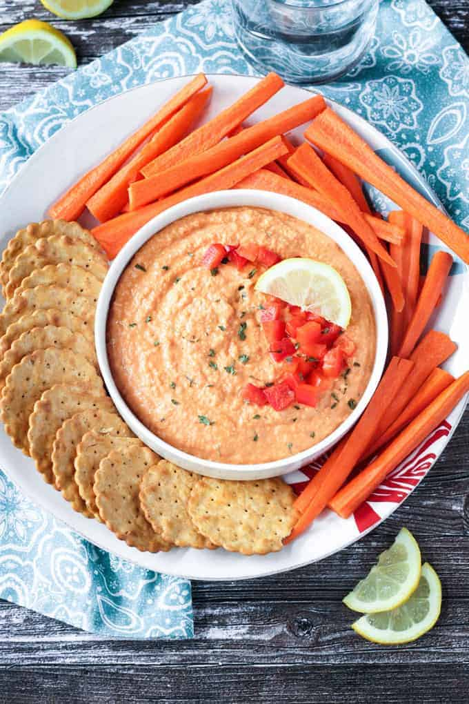

Roasted Red Pepper Hummus

Your very first hummus
Roasted Red Pepper Hummus is a great dip to have on hand. It can be made rather quickly with a few ingredients kept on hand in your pantry and a couple of fresh peppers. This is a solid base hummus for your repitoire. But keep in mind that you can make a lot of different flavors of hummus by simply replacing the roasted red peppers with a different accent ingredient. Some ideas to pique your interest are below.
- Roasted Garlic
- Jalapeno
- Lemon (or plain)
- Everything Bagel
- And many more...
Hummus is best served warm right after making it with a sprinkle of paprika.
Do note you'll need a high powered blender to make a truly smooth hummus
Ingredients
- 2 cans of chickpeas with liquid drained from one
- 1/4 cup of Seasame Seeds
- 1 tsp ground cumin
- 1/4 tsp sea salt or kosher salt
- 2-4 cloves of garlic (to personal taste)
- two medium red peppers
- Juice of 1 lemon
- 1 tbsp Olive Oil
Steps
Roast the peppers
First you must prep the red peppers by roasting them.
- Pre-heat your oven to 400 degrees.
- Cut the peppers in half and remove all seeds and green or white bits.
- Place the peppers face down on a baking sheet.
- Once the oven is ready put the pepeprs into the oven and bake for 15-20 minutes. Checking to ensure the outer skins have charred and bubbled.
- When the peppers have finished roasting remove the tray from the oven and place the peppers into a paper bag and seal it. Allowing it to sit for 5 minutes
- Remove the peppers from the paper bag and peel off the skins.
- The peppers are now ready for the hummus
Make the hummus
- Combine all ingredients in a high powered blender
- Start blending at speed 1
- Slowly increase the speed until you reach maximum
- Blend for 1 full minute*
- Slowly reduce the speed back to 1
- Stop the blender and pour your hummus into a storage container or a serving dish
* Alternatively if your blender has a dip / sauce mode you may run this instead